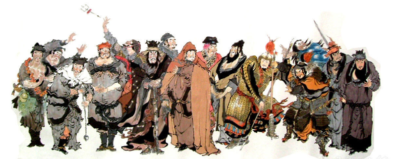

『水滸伝』とは
北宋末期の乱世を舞台に、好漢百八人が暴力・知力・胆力を発揮し、
戦いを繰り広げながら、「梁山泊」へと集結していく。窃盗、殺人、痛飲、奸計、忠義、友情…。
善悪が渾然一体となる物語世界
ーー中国の古典小説で、明代に出版された小説です。
「四大奇書」として『西遊記』、『三国志演義』、『金瓶梅』もしくは『紅楼夢』と並べられることが多いです。
明代当時は「出版革命」が起こった時代といわれており、本が大量に生産された時代でした。
その中で小説なども出版され、これまで演劇や語りなどで知られていた『水滸伝』も本となって世に広まり、多くの人に読まれるきっかけとなりました。

トップに戻る